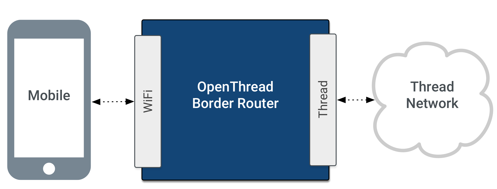
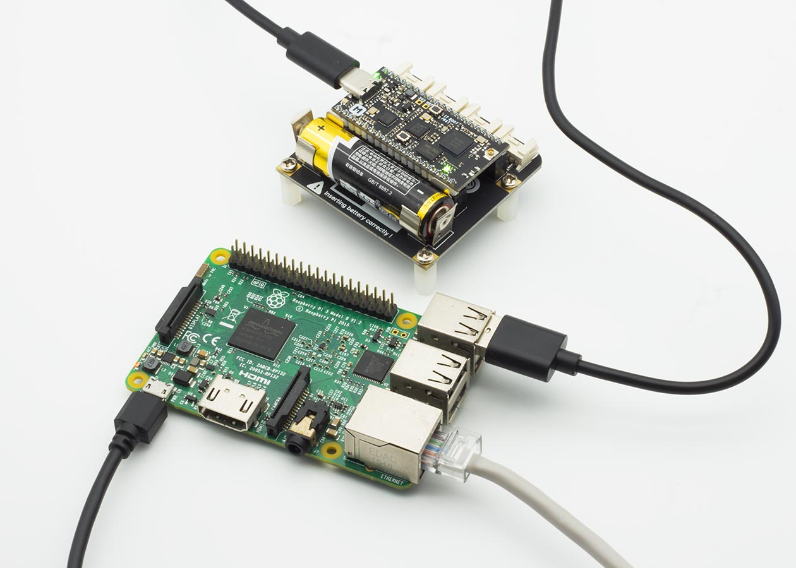
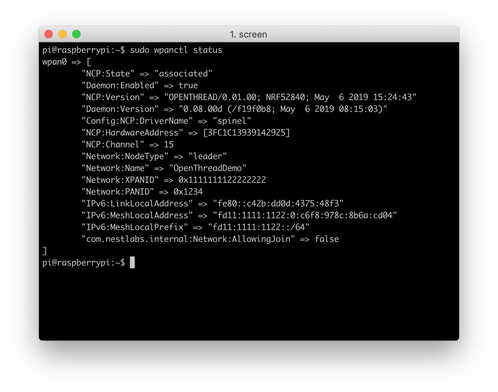

OpenThread Border Router¶
Introduction¶
A Thread Border Router serves as a gateway between the Internet and the Thread network. OpenThread's implementation of a Border Router is called OpenThread Border Router (OTBR). OTBR is a Thread Certified Component on the Raspberry Pi 3B with a Nordic nRF52840 NCP.

A Thread Border Router minimally supports the following functions:
- End-to-end IP connectivity via routing between Thread devices and other external IP networks
- External Thread Commissioning (for example, a mobile phone) to authenticate and join a Thread device to a Thread network
For more technical details, openthread.io is the best place for you.
In the following documentation sections, you'll build an OpenThread Border Router with Raspberry Pi 3B and Grove Mesh Kit.
Hardware Requirements¶
- Raspberry Pi 3B
- A Grove Mesh Kit for nRF52840-MDK
- 4 GB (or larger) microSD card and microSD card reader
- microUSB power supply for Raspberry Pi 3B

Set Up Raspberry Pi 3B¶
Download and install Raspbian¶
Download the RASPBIAN STRETCH LITE image to your host and follow the installation guide to install the image on an microSD card.
Flash the NCP firmware¶
OTBR runs on an NCP design. The pre-built firmware is located in grove-mesh-kit/firmware/openthread/ncp. Follow these steps to flash the pre-built NCP firmware:
-
Connect one nRF52840-MDK board to your PC using the USB-C cable.
-
Open a file explorer. Confirm that the board has appeared as a removable drive named DAPLINK. This allows you to program the nRF52840 chip.
-
Drag and drop the pre-built NCP firmware
thread_ncp_ftd_uart_nrf52840_mdk.hexinto DAPLINK.
Set up the Border Router¶
Warning
Before you continue, make sure your Raspberry Pi 3B is connected to the internet using Ethernet. The bootstrap script disables the platform's Wi-Fi interface and the setup script requires internet connectivity to download and install wpantund.
OTBR communicates with the nRF52840-MDK(serves as NCP) via wpantund. On Raspberry Pi 3B:
-
Clone the OTBR repository:
git clone https://github.com/openthread/ot-br-posix
-
Install dependencies:
cd ot-br-posix./script/bootstrap
-
Compile and install OTBR and
wpantund. Note that this setup script uses Network Manager to automatically set up the Wi-Fi access point (AP):./script/setup
-
Attach the NCP device to the Raspberry Pi 3B via USB.
-
Configure the NCP device's serial port in
wpantund:-
Determine the serial port name for the NCP device by checking /dev:
ls /dev/tty*
-
Add the serial port name to
/etc/wpantund.conf. For example, for a serial port name ofttyACM0:Config:NCP:SocketPath "/dev/ttyACM0"
-
-
Restart the Border Router. The OTBR service should start on boot.
Verify services¶
Verify that all required services are enabled:
sudo systemctl status
If the setup script above was successful, the RPI3B is in running state and the following services appear in the output:
wpantund.serviceavahi-daemon.serviceotbr-web.serviceotbr-agent.service
If the RPI3B is in degraded state, some other service has failed to start. Check to see which:
sudo systemctl --failed
If the failed service is tayga or dnsmasq, it is normal. These services are completely configured as part of the Wi-Fi Access Point Setup.
Verify NCP¶
Verify that the NCP is in the correct state:
sudo wpanctl status
wpanctl is a command line utility provided with wpantund. It is used to communicate with the wireless PAN interface (default is wpan0) that wpantund is bound to in the NCP design.
If the NCP is successfully running OpenThread and is not a member of a Thread network, the output should be similar to the below:
wpan0 => [ "NCP:State" => "offline" "Daemon:Enabled" => true "NCP:Version" => "OPENTHREAD/0.01.00; NRF52840; May 6 2019 15:24:43" "Daemon:Version" => "0.08.00d (/f19f0b8; May 6 2019 08:15:03)" "Config:NCP:DriverName" => "spinel" "NCP:HardwareAddress" => [3FC1C13939142925]
If the NCP:State is uninitialized, troubleshoot with the following:
- Verify the RPI3B has sufficient power (use the proper external AC adapter).
- Disconnect and reconnect the NCP device to the RPI3B.
-
Verify that the NCP serial device is present. For example, if the device should be attached to
/dev/ttyACM0:ls /dev/ttyACM* /dev/ttyACM0
-
Reset the NCP with
sudo wpanctl reset. - Check the NCP status again with
sudo wpanctl status.
Use the Web GUI¶
Now, you can use the OpenThread Border Router (OTBR) Web GUI to configure and form, join, or check the status of a Thread network.
The Border Router enables Access Point mode and advertises the BorderRouter-AP network default.
Connect to the BorderRouter-AP Wi-Fi network and access the Web GUI by visiting the OTBR's local IPv4 address(10.42.0.1 default) in a mobile browser:
{kind=link}
Form a Thread network¶
Use the Form menu option to create a new Thread network.
After the network forms, confirm by checking the Status menu option or running sudo wpanctl status on the command line of the OTBR:
{kind=link}

External Thread Commissioning¶
OpenThread Border Router (OTBR) features a Thread Border Agent, which supports external Thread Commissioning. In external Thread Commissioning, a device outside of the Thread network (for example, a mobile phone) commissions new devices onto the network.
Prepare the Joiner device¶
You should prepare another nRF52840 board. Flash the board with the OpenThread CLI firmware. The pre-built CLI firmware is located in grove-mesh-kit/firmware/openthread/cli:
-
Connect the nRF52840-MDK board to your PC using the USB-C cable. A removable drive named DAPLINK will appear.
-
Drag and drop the pre-built cli firmware
thread_cli_ftd_uart_nrf52840_mdk.hexinto DAPLINK. After flashed, label the board Joiner so that later you don't confuse the boards. -
Open a terminal window and run:
wherescreen /dev/cu.usbmodem141102 115200/dev/cu.usbmodem141102is the serial port name of the Joiner. -
Once the Joiner device is ready, obtain its factory-assigned IEEE EUI-64. Use the
eui64command in the OpenThread CLI:> eui64 9019ec5d617d7aab Done
Use the Thread Commissioning App¶
External commissioning is supported by the Thread Commissioning App, available for download on the Google Play Store for Android devices.
Connect your phone to the Wi-Fi access point BorderRouter-AP, and start the Thread Commissioning App.
Select the target Border Router from the available list. The name is the same as the Thread network created by the OTBR Web GUI. If the same Border Router shows up multiple times with different IPv4 and IPv6 addresses, select the one with the static IPv4 address used for the Wi-Fi access point setup (10.42.0.1 here).
When prompted for a password, enter the passphrase (Commissioner Credential) set by the OTBR Web GUI.
{kind=link}
Commission the Joiner¶
After connected to the Border Router, the app provides the option to scan a Connect QR Code or enter a Join Passphrase manually.
Thread Connect QR Codes are created with the following text string format:
v=1&&eui=9019ec5d617d7aab&&cc=J01NU5
eui is the Joiner device's EUI64 value and cc is the Joiner Credential.
Use the following tool to generator your QR Code:
In the Thread Commissioning App, scan the Connect QR Code generated above. While the app is waiting, enter the OpenThread CLI on the Joiner device and start the Joiner role with that same Joiner Credential:
> ifconfig up Done > joiner start J01NU5 Done
Wait for the DTLS handshake to complete between the Commissioner and Joiner:
> Join success
{kind=link}
Join the network¶
On the Joiner device, start the Thread protocol to automatically join the network.
> thread start Done
Check the state after a few moments to confirm. It may initially start as a Child, but within two minutes, it will upgrade to a Router.
> state router Done
Obtain the addresses of the joiner by typing ipaddr:
> ipaddr fd11:1111:1122:0:0:ff:fe00:cc00 fd11:22:0:0:b37e:fb2f:899a:fe3b fd11:1111:1122:0:54ae:6bc4:6dbf:f0a6 fe80:0:0:0:b0ba:25f2:a1f:d1b1 Done
Check the Internet connectivity¶
Test the connectivity between the Joiner device in the Thread network and the Internet by pinging a public IPv4 address. To reach the IPv4 address from the Thread device, a Well-Known Prefix of 64:ff9b::/96 and an IPv4 address of the destination are used.
To ping Google’s DNS 8.8.8.8 from the IPv6 address, append a hexadecimal form of the IPv6 to the Well-Known Prefix resulting in: 64:ff9b::808:808.
> ping 64:ff9b::808:808 > 16 bytes from 64:ff9b:0:0:0:0:808:808: icmp_seq=1 hlim=112 time=245ms > ping 64:ff9b::808:808 > 16 bytes from 64:ff9b:0:0:0:0:808:808: icmp_seq=2 hlim=111 time=230ms > ping 64:ff9b::808:808 > 16 bytes from 64:ff9b:0:0:0:0:808:808: icmp_seq=3 hlim=110 time=225ms
Congratulations!¶
You've successfully created an OpenThread Border Router, while allowing the Joiner device in the Thread network communicating with the Internet.
License¶
Portions of this page are reproduced from work created and shared by Google and used according to terms described in the Creative Commons 3.0 Attribution License.
Thread is a registered trademark of the Thread Group, Inc.
Create an Issue¶
Interested in contributing to this project? Want to report a bug? Feel free to click here: